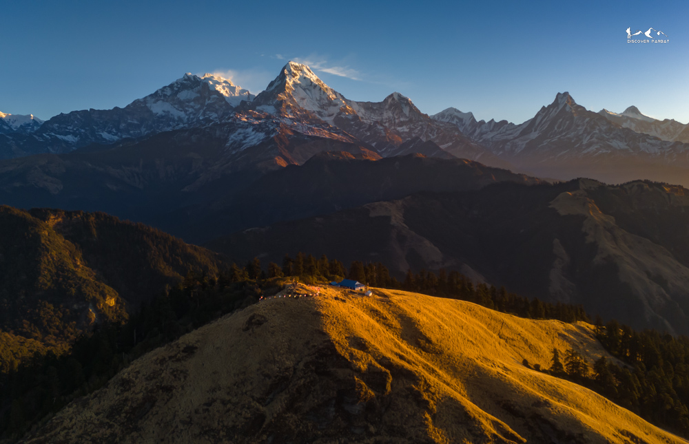
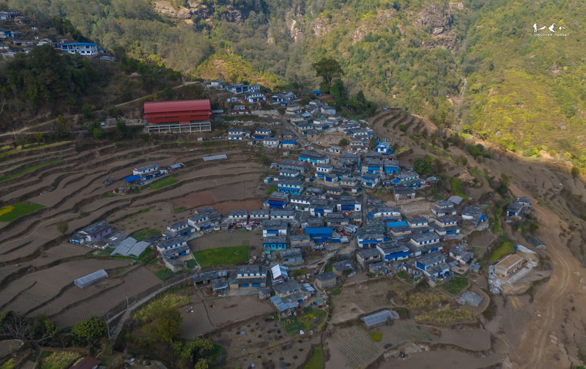
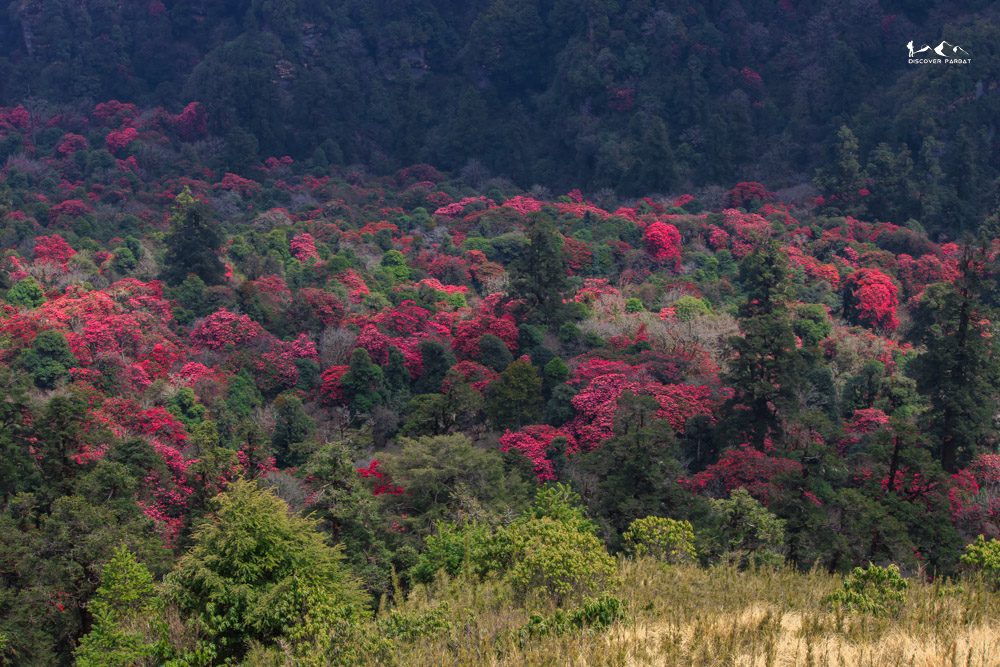
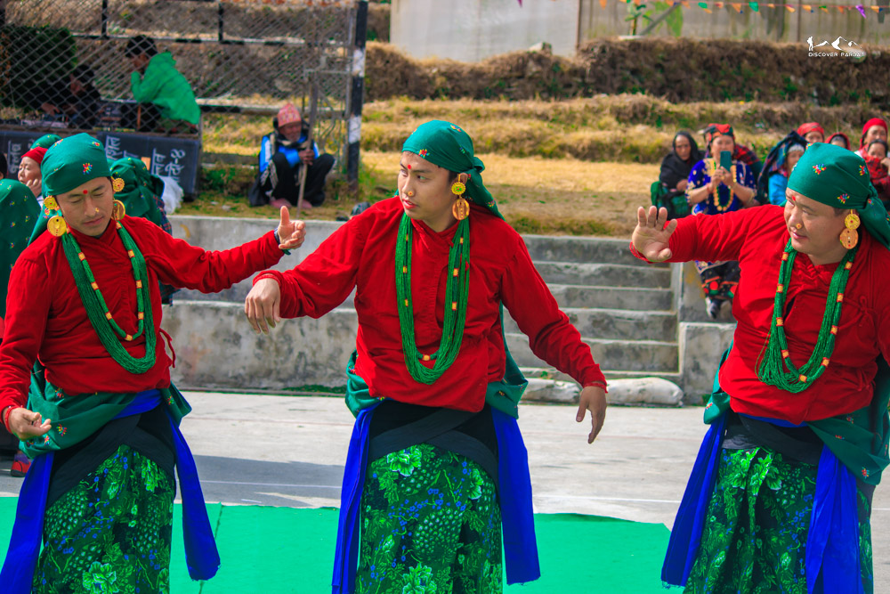

Photo GalleryHidden Himalayan trail above Parbat with panoramic views, authentic homestays, and the silence of a trail untouched by crowds.




Photo GalleryKokhe Danda Trek is a hidden gem in the hills of western Nepal, offering a refreshing alternative to the more crowded trekking routes. Tucked away from the mainstream trails, this trek introduces you to untouched landscapes, peaceful forests, and authentic rural life that many popular treks no longer provide. It's an ideal journey for those seeking tranquility, raw natural beauty, and a deeper connection with local culture.
What makes Kokhe Danda truly different is its silence and solitude. Unlike well-known trekking regions that can feel busy during peak seasons, this trail remains calm and uncrowded. You walk through quiet paths, lush forests, and traditional villages where life moves at its own pace. The absence of mass tourism allows you to experience nature and culture in their purest form, without distractions.
The trek typically spans a few days, making it perfect for travelers with limited time. The itinerary blends gentle ascents with rewarding viewpoints, leading you through terraced farmlands, small settlements, and scenic ridgelines. Each day offers a mix of walking and cultural immersion, with opportunities to interact with locals, observe daily village life, and enjoy home-cooked meals.
Culturally, Kokhe Danda provides a genuine and traditional experience. You'll encounter warm hospitality, simple lifestyles, and traditions that have been preserved for generations. Staying in local homes adds a personal touch to the journey, giving you insight into the region's heritage and way of life.
Above all, the highlight of the trek is the panoramic views. From the top of Kokhe Danda, you are rewarded with sweeping vistas of rolling hills, distant Himalayan ranges, and dramatic sunrises and sunsets. It's a place where you can pause, breathe, and truly appreciate the beauty of Nepal — far from the crowds, yet just as breathtaking.
You want a genuine off-the-beaten-path experience away from tourist crowds
You're a first-time trekker or someone looking for something quieter and more personal
You love authentic village life, home-cooked food, and local culture
You have 5 days and want panoramic Himalayan views without a demanding climb
You're looking for high-altitude acclimatisation above 4,000m
You prefer well-equipped teahouses with hot showers and Wi-Fi every night
Morning drive from Pokhara to Kushma, a one and a half hour drive (57KM). Exploration of Kushma, city of adventure. If you would be interested, you can also do Bungee or Zipline. We have lunch at Kushma and then drive one hour further to Banau, 2100m. From Banau, we start our hike and after 1–1.5 hrs of hike, we reach our Homestay at Haljure.
We wake up early in the morning for sunrise view. During clear weather, we can see from Dhaulagiri, Annapurna, Mansiri, Ganesh to Langtang range peaks.
We have local breakfast and after that we start our hike to Lespar. At Lespar, we will have a Momo making session with the host at Homestay. We walk for around an hour to explore the village, interact with locals and you can also try the Magar Cultural Dress as well. After lunch, we hike to Sarga Camp and Homestay.
Even though we do not see snowcapped peaks from Sarga, this is still a charming place inside the forest. After breakfast, we set off to Kokhe Danda. The first half till lunch is a bit steep where we gain around 700m in elevation, which takes around 3–3.5 hrs. We pass through beautiful Rhododendron and Oak forests. After lunch at Dhima, it's more comfortable as we hike through a gradual uphill section except for the final push before reaching Mohare and Kokhe Danda.
We wake up early in the morning for sunrise and mountain views. On clear weather, we can see close views of Dhaulagiri and Annapurna Range mountains.
After breakfast, we start our hike towards Phalame Danda. Initially, we hike down to Nangi village, where we stop for lunch. After that, we hike gradually up for the next half and then mostly flat before we reach our Community Homestay at Phalame Danda.
On the last day, we still see both Dhaulagiri and a few peaks of the Annapurna range. Initially, we hike down to Banskharka village where we stop for a tea break. After that we hike down to Mallaj where we end our trek and take a taxi back to Pokhara via Kushma.
No prior trekking experience is needed. Kokhe Danda is rated Easy and is suitable for first-time trekkers. The longest day (Day 3) involves around 6–7 hours of walking with some elevation gain, so a basic level of fitness helps — but you don't need to be an athlete. If you can walk comfortably for a few hours, you'll be fine.
We arrange private transport from Pokhara to Banau (approx. 2.5 hours including the stop in Kushma). The drive is scenic — you pass through the Kali Gandaki gorge area and arrive in the hills of Parbat. No public buses or connections to worry about; it's all handled by us.
The homestays are simple, clean, and genuinely family-run — this is one of the things that makes Kokhe Danda special. You'll typically have a private or semi-private room with basic bedding. Bathrooms are usually shared and facilities are basic. Think warm hospitality over luxury. Meals are home-cooked by the host family, which is honestly one of the highlights of the trip.
You'll eat what the local families eat — mostly dal bhat (lentils and rice), fresh vegetables, local honey, eggs, and seasonal produce. On Day 2, there's a hands-on momo making session with your host family. It's wholesome, filling, and genuinely delicious. If you have dietary restrictions or allergies, let us know in advance and we'll make sure the hosts are prepared.
Mobile signal (NCell or NTC) is available in most villages along the route, though it can be patchy on the higher ridgelines. Wi-Fi is not reliably available at the homestays — this is a remote trail and part of its charm. We'd recommend downloading offline maps and letting family know you may be out of contact for stretches. A local SIM card from Pokhara is a good idea if you need connectivity.
The two peak windows are March–May (spring) and October–November (autumn). Spring brings rhododendrons in full bloom along the forest trails, while autumn delivers the clearest mountain views after the monsoon clears the air. December is quieter than most people expect — fewer trekkers and crisp visibility make it a genuinely underrated option. June–September is the monsoon season; trails are lush with waterfalls and wildflowers but wetter underfoot.
As this five days trail goes parallel to Annapurna Conservation Area without getting inside it, you dont require any permits for this option.
Absolutely — solo trekkers are very welcome and actually quite common on this route. You'll have a private guide for the full trek, and the solo experience on these quiet trails is genuinely special. You can also join one of our fixed group departures if you'd prefer company. Either way, the pricing is transparent and listed above.
For a 5-day easy trek, you don't need to overpack. Essentials include: sturdy walking shoes or light trekking boots, layers for cool evenings at altitude (3,300m nights can be cold), a rain jacket, a good daypack, a reusable water bottle, sunscreen, and a headlamp. A sleeping bag liner is useful for homestay nights. We'll send you a full packing list after booking.
If you need to return early for any reason, there is no refund on the remaining trek cost. However, we will arrange comfortable accommodation for you in Pokhara for the number of nights that remain on your itinerary — at no extra charge. Please also see our full Cancellation Policy for details.